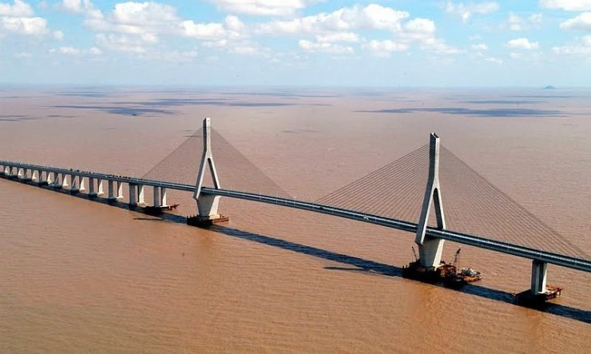
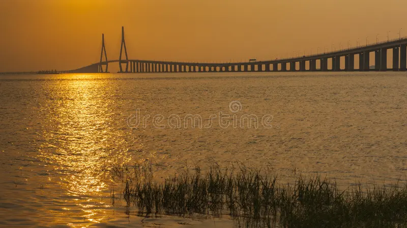

Po przejęciu portu w Rotterdamie w 2003 r., Hongkongu w 2004 r. I Singapuru w 2005 r. , Szanghaj jest teraz, dzięki dynamice Chin, najważniejszym portem na świecie, ale całkowicie zatłoczonym przy rocznym wzroście jego 30% ruchu. W latach 2000-2001 podjęto decyzję o budowie nowego portu głębinowego na wyspach Yangshan , niedaleko Szanghaju . Ten nowy port musi być połączony z dystryktem Guoyuan gigantycznym mostem falującym na otwartym morzu przez co najmniej 32,5 kilometra, zanim osiągnie swój cel, aby podążać za płyciznami zdolnymi do podtrzymania fundamentów. Podczas gdy pierwsze szacunki przewidywały normalny okres od siedmiu do ośmiu lat na to osiągnięcie, prace fundamentowe trwały od 26 czerwca 2002 r. Do 16 września 2003 r. , Sama konstrukcja została ukończona 26 maja 2005 r. , Czyli mniej niż trzy lata. po rozpoczęciu prac ustanawiając rekord prędkości w budownictwie pomimo szalejących w regionie wiatrów, pływów i huraganów. Same prace wykończeniowe - asfalt, urządzenia sygnalizacyjne i zabezpieczające - zostały zakończone pod koniec listopada 2005 roku . Ten cud w chińskim stylu był możliwy dzięki doskonałej organizacji, a przede wszystkim dzięki liczebności i szczególnemu zarządzaniu zatrudnioną siłą roboczą. Na tej gigantycznej budowie zatrudnionych było sześć tysięcy pracowników, inżynierów i techników z prowincji Jiangsu , Anhui i Henan . Pracowali i mieszkali na moście iw jego wnętrzu, nawet wewnątrz ogromnych metalowych belek - 59 m długości, 6 m szerokości, 3,5 m wysokości - 20 m n.p.m., przemieszczając się wraz z postępem prac. Każdemu przysługiwało 3,5 m 2 powierzchni . Średnia pensja wynosiła 1000 juanów (około 110 euro), czyli dwa razy więcej niż średnia pensja w branży budowlanej w Chinach . Osamotnieni, żyjąc w stałej wilgotności 100%, nie mieli czasu na wydawanie pensji. Ich dzień pracy trwał 12 godzin. Według jednego z kierowników budowy: „Gdybyśmy musieli codziennie zabierać cały personel na ląd, stracilibyśmy dużo czasu na projekcie. Było to nie do pogodzenia z oczekiwanymi przez władze miasta opóźnieniami.
Most Jintang jest mostem podwieszonym z przęsłem rozpiętości 620 m (14 w świecie) (fot. 75) [2,13,14]. Poszczególne
przęsła mostu głównego (żeglownego) mają rozpiętości: 77 +

218 + 620 + 218 + 77 m. Pomost wykonano w postaci skrzynki stalowej wielokomorowej, a pylony betonowe mają wysokość 204 m. Jest jednym z dwóch dużych mostów podwieszonych na mostowej trasie transoceanicznej archipelagu Zhoushan – największej grupy wysp oceanicznych w Chinach.
Całkowita długość mostu to 26 540 m, z których 18,4 km biegnie nad wodą. Most jest 4. najdłuższym mostem drogowym
w Chinach po mostach Jiaozhou, Zatoki Hangzhou i Donghai.
Łączy Ningbo z wyspą Jintang. Ukończony w 2009 r.